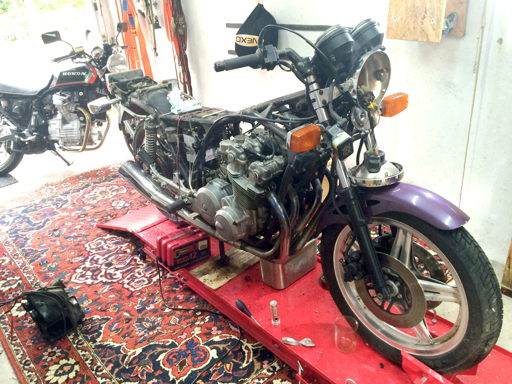

Projekt · Honda
CB900F Bol d'Or · 1981
Eine große Honda von Grund auf restauriert – und schließlich gegen eine leichtere CB450 von 1970 getauscht.
Große Honda, große Aufgabe
Der ursprüngliche Motor war nicht mehr zu retten. Ein gebrauchter Ersatzmotor wurde besorgt; anschließend entstand die Maschine Schritt für Schritt neu: Rahmen, Tank und weitere Teile wurden lackiert, die Bremsen überarbeitet und neu lackiert. Auch Kette, Ritzel, Kettenrad und Reifen kamen neu – eine Restaurierung bis ins Detail.
Die CB900F wurde 1979 für den europäischen Markt eingeführt. Die Bezeichnung Bol d'Or erinnert an Hondas Erfolge bei dem französischen 24-Stunden-Langstreckenrennen; für 1981 führte Honda die europäische CB900F2 Bol d'Or mit Verkleidung ein.
Am Ende war die 900er mit 64 Jahren für mich zu schwer. Ich habe sie gegen eine Honda CB450 von 1970 getauscht – auf den ersten Blick gegen die schlechter restaurierte Maschine. Für mich ist die leichtere CB450 aber das interessantere Motorrad. Das wird ihre eigene Geschichte.
Bildergalerie
Der Anfang
Die ersten Bilder dieser Restaurierung – weitere folgen.

